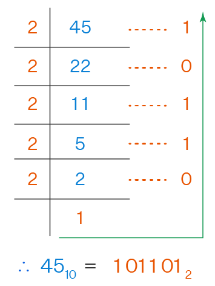
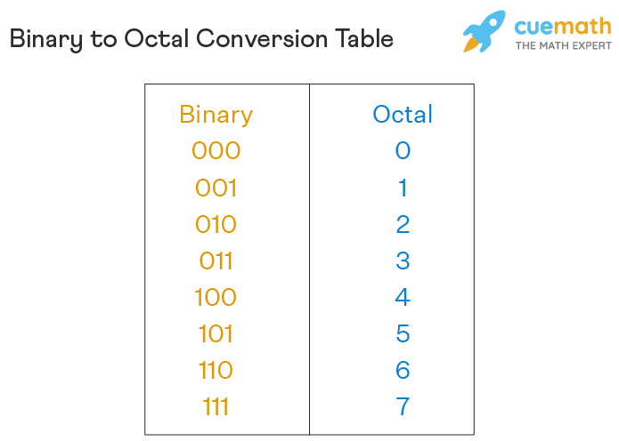
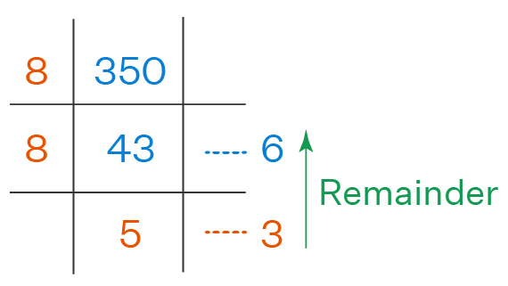
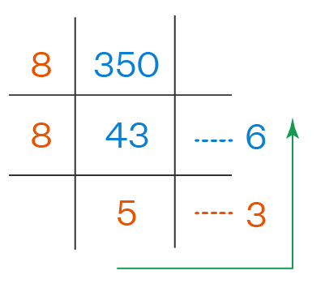
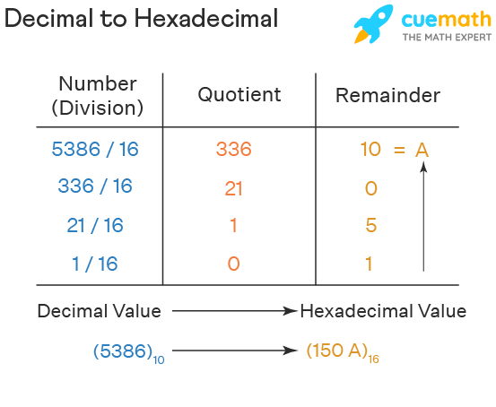
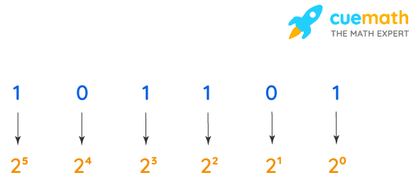
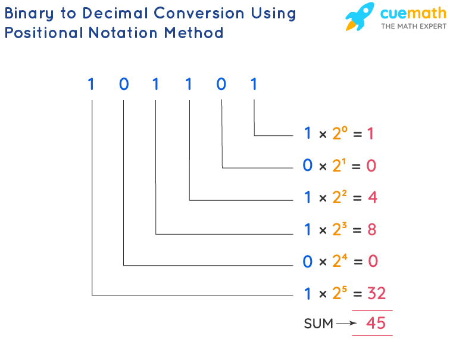
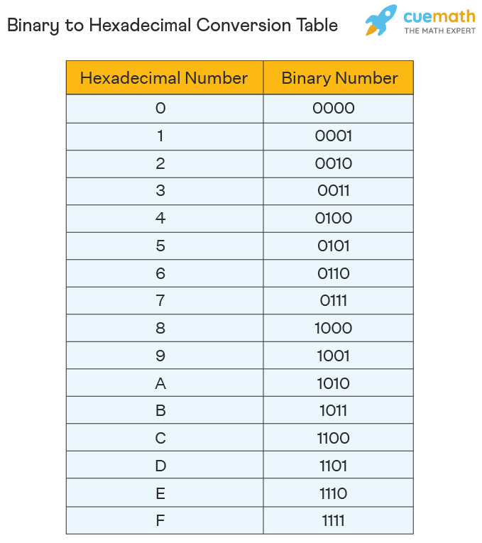
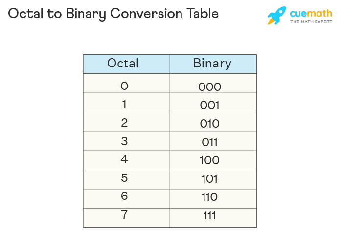
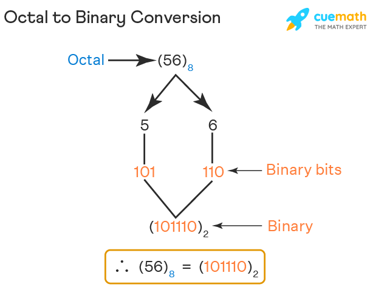

Decimal to binary:
- To convert numbers from decimal to binary, the given decimal number is divided
repeatedly by 2 and the remainders are noted down till we get 0 as the final quotient.
The following steps is considered as the decimal to binary formula that shows the
procedure of conversion.
- Divide the given decimal number by 2 and note down the remainder.
- Now, divide the obtained quotient by 2, and note the remainder again.
- Repeat the above steps until you get 0 as the quotient.
- Now, write the remainders in such a way that the last remainder is written first,
followed by the rest in the reverse order. - This can also be understood in another way which states that the Least Significant
Bit (LSB) of the binary number is at the top and the Most Significant Bit (MSB) is at
the bottom. This number is the binary value of the given decimal number.
Example: Convert the decimal number 1310 to binary.
Solution: We will start dividing the given number (13) repeatedly by 2 until we get the quotient
as 0 We will note the remainders in order.

| Division by 2 | Quotient | Remainder |
| 13 / 2 | 6 | 1 (LSB) |
| 6 / 2 | 3 | 0 |
| 3 / 2 | 1 | 1 |
| 1 / 2 | 0 | 1 (MSB) |
Decimal to Binary to octal:
To convert decimal to octal number, there are two methods of conversions. The first method
is to convert the decimal number to another number system i.e. binary or hexadecimal and finally
convert it to octal. The second method is the direct method where we convert decimal to octal
directly. Let see both the methods:
- First, we convert the decimal number (45)10 to a binary number. We divide 45 by the binary base number
i.e. 2 until we obtain the quotient as1 .

- Once we have obtained the binary number, we can convert this number to an octal number by using the binary to the octal conversion table. 
- Once we have obtained the octal number, the conversion from decimal to octal can be written as: (45)10 = (55)8
Therefore, the decimal number (45)10 = (101101)2.
With the help of the above table, we first write the number into its 3-bit binary number as a zero needs to be added before digits to form the 3-bit binary number. Hence, the 3-bit binary number is 101 and 101. Looking at the same table above we can convert these binary numbers to their octal numbers to derive the final number. Hence, the numbers are 5 and 5.
Therefore, (101101)2 = (55)8.
In this method, a decimal number can be converted to a binary number by dividing the given number by 2 until we obtain a quotient as 1. The numbers are written from downwards to upwards. Once the binary number is obtained, we convert that into an octal number. Let us understand this using an example. Convert the decimal number (45)10 to an octal number
- Check if the decimal number is less than 8. If yes, the octal number is the same. If no, then proceed forward. In this case, 350 is more than 8 so let's go to step 2.
- Divide 350 by 8 (octal base number). Note down the quotient and the remainder in the quotient-remainder form. Repeat this process (dividing the quotient again by 8) until we get the quotient to be less than 8. 
- Once we obtain the quotient to be less than 8 we stop dividing to derive at the octal number. The octal number is considered by reading all the remainders and the last quotient from bottom to top. 
Therefore, (350)10 = (536)8.
Decimal to Hexadecimal:
In order to convert decimal to hexadecimal, we need to do some basic mathematical calculations using the following steps.
- Step 1: Divide the given decimal number system value by 16 and note the remainder.
- Step 2: Divide the quotient by 16. Repeat this until you get a quotient equal to zero.
- Step 3: Use the characters A, B, C, D, E, F in place of 10, 11, 12, 13, 14, 15 in the remainders respectively, wherever needed.
- Step 4: Follow the reverse order pattern to arrange all the values of the remainder.
P10 = Q16
where P is a decimal number and Q is a hexadecimal number.
Let us understand how to convert a decimal number to a hexadecimal number with the help of the following example.
Example: Convert 5386 to a hexadecimal number.

Solution: We will use the following steps to convert 5386 to hexadecimal.
- Step 1: Divide 5386 by 16 to get 336 as the quotient and note the remainder 10.
- Step 2: Divide the quotient 336 obtained from the previous step by 16 to get 21 as the next quotient and note the remainder 0.
- Step 3: Divide the quotient 21 by 16 to get 1 as the new quotient and note the remainder 5.
- Step 4: Divide the quotient 1 by 16 to get 0 as the new quotient and note the remainder 1. Since we get 0 as the quotient, we stop here.
- Step 5: Now, reverse the remainders and note the combined number that it forms. We need to keep in mind that 10 is written as A in the hexadecimal number system.
- Step 6: After writing the remainders in the reverse order we get, 150A. Therefore, 5386 is expressed as 150A in the hexadecimal number system. This can be written as (5386)10 is equal to (150A)16.
Binary
Binary to Decimal:
The positional notation method is one in which the value of a digit in a number is determined by a weight based on its position. This is
achieved by multiplying each digit by the base (2) raised to the respective power depending upon the position of that digit in the number.
The sum of all these values obtained for each digit gives the equivalent value of the given binary number in the decimal system. Let us understand
this with the help of examples.
Solution: Observe the following steps to understand the binary to decimal conversion. In any binary number, the rightmost digit is called the
'Least Significant Bit' (LSB) and the left-most digit is called the
'Most Significant Bit' (MSB)'. For a binary number with 'n' digits, the least
significant bit has a weight of 20 and the most significant bit has a weight of 2n-1.


Binary to Octal:
Since binary numbers are used in computers in the form of bits or bytes and octal numbers are used in electronics, direct
conversion from binary to octal is not a method. There are two kinds of methods that are used in the binary to octal conversion.
Binary to Octal by grouping
Here are the steps that need to be followed for this method.
- Step 1: Identify the binary number i.e. the digits should be either 0 or 1 with base 2.
- Step 2: Group all the 0 to 1 in a set of three starting from the right side.
- Step 3: Add 0's to the left if it does not form a group of three. Each group must have three digits.
- Step 4: Look at the binary to octal conversion table to get the accurate numbers.
- Step 5: Once obtained, that number is the octal number.
For example: Convert the binary number (01110101)2 to an octal number.
Solution: Using the grouping method, set the binary number into three numbers in each group.
(01110101)2 = 001 110 101 = 1 6 5
(01110101)2 = (165)8
Binary to Hexadecimal:
To convert binary to hexadecimal numbers, we need to use both the base numbers i.e 2 for binary and 16 for hexadecimal. The
conversion process happens in two methods, the first method is by using the binary to hexadecimal conversion table where 1
hexadecimal number is equivalent to 4 binary numbers. The second method is by converting the hexadecimal number to a decimal
number then convert it to a binary. Let us see both the methods in detail.
Binary to Hexadecimal (With Conversion Table)
One of the simplest and easiest methods to convert from binary to hexadecimal is by using the conversion table. Since binary
numbers only have 0 and 1 that are called bits and hexadecimal numbers are also positional number system, every 4 bits or
numbers is equivalent to 1 hexadecimal number that includes the alphabets A - F as well. The conversion table is as follows:

Let us look at an example for a better understanding.
For example: Convert (00110110101)2 to Hexadecimal.
We first group the numbers in a set of 4. Since every 4 digit in binary becomes one 1 digit in hexadecimal. Add zeros to
the left of the last digit if there aren't enough digits to make a set of four:
0001 1011 0101
By looking at the conversion table, we can find the equivalent hexadecimal number.
0001 = 1 , 1011 = B , 0101 = 5
We arrange the numbers together to get the final number.
Therefore, (00110110101)2 = (1B5)16.
Octal
Octal to Decimal:
As with any other conversion in the number system, octal to decimal conversion is also done by using its base number. To convert
octal to decimal, we need to multiply the octal digits with the power of 8 starting from the right-hand side and gradually decreasing
to zero to sum up, all the products. Here are the steps to convert a number from octal to decimal:
- Step 1: Since an octal number only uses digits from 0 to 7, we first arrange the octal number with the power of 8.
- Step 2: We evaluate all the power of 8 values such as 80 is 1, 81 is 8, etc., and write down the value of each octal number.
- Step 3: Once the value is obtained, we multiply each number.
- Step 4: Final step is to add the product of all the numbers to obtain the decimal number.
Octal to Binary:
Observe the octal to binary table given below which will help you to convert octal numbers to binary numbers.
The octal to binary table shows the equivalent number of each octal digit to binary, for example, 0 in octal is
equivalent to 000 in binary, 1 in octal is equivalent to 001 in binary,
28 is the same as 0102, and so on.

Theres was an easier and less complicated one, is to directly convert a number from octal to binary by referring
to the octal to binary table given above. In this method, we convert every digit of the given octal number to its
binary equivalent by referring to the above chart. For example, using this method we can directly write 38 as 0112,
58 as 1012, etc.
Let us convert the same number 588 from octal to binary using the direct method. There are two digits in this number, 5 and 6. Referring to the above octal to binary chart:
58 → 1012
68 → 1102
By combining these two, we will get, 568 = 1011102. Observe the image given below for your reference.

Octal to Hexadecimal:
Using the below two methods, we can convert the octal number system into the hexadecimal number system.
- Convert the octal number into binary and then convert the binary into hexadecimal.
- Convert the octal number into decimal and then convert the decimal into hexadecimal.
Let's convert (56)8 into hexadecimal
- Convert (56)8 into Binary In order to convert the octal number into binary, we need to express every octal value using 3 binary bits.
- Convert (101110)2 into Hexadecimal In order to convert the binary number into hexadecimal, we need to group every 4 binary bits and calculate the value[From left to right].
Binary equivalent of 5 is (101)2.
Binary equivalent of 6 is (110)2.
(56)8
= (101) (110)
= (101 110)2
(101110)2 in hexadecimal
= (101110)2
= (10) (1110) , grouping by 4
= (2)(14)
= (2E)16
14 equivalent in hexadecimal is E. This method is relatively easy compared to the below method.
Hexadecimal
Hexadecimal to Decimal:
As we know, number systems can be converted from one base to another.
Thus, we can convert hexadecimal numbers to decimal easily. This number system conversion can be done as explained in the example given below:
Example:
Convert 7CF (hex) to decimal.
Solution:
Given hexadecimal number is 7CF.
In hexadecimal system,
7 = 7
C = 12
F = 15
To convert this into a decimal number system, multiply each digit with the powers of 16 starting from units place of the number.
7CF = (7 × 162) + (12 × 161) + (15 × 160)
= (7 × 256) + (12 × 16) + (15 × 1)
= 1792 + 192 + 15
= 1999
From this, the rule can be defined for the conversion from hex numbers to decimal numbers.
Suppose below is the hex number with n digits: dn-1 … d3 d2 d1 d0
Multiply each digit of the hex number with its corresponding powers of 16 and add them such as:
dn-1 × 16n-1 + … + d3 × 163 + d2 × 162 + d1 × 161 + d0 × 160
Thus, the resultant number will be taken as base 10 or decimal number system.
| dn-1 … d3 d2 d1 d0 (hex) = dn-1 × 16n-1 + … + d3 × 163 + d2 × 162 + d1 × 161 + d0 × 160 (decimal) |
Hex to Decimal Table
| Hexadecimal | 0 | 1 | 2 | 3 | 4 | 5 | 6 | 7 | 8 | 9 | A | B | C | D | E | F |
| Decimal | 0 | 1 | 2 | 3 | 4 | 5 | 6 | 7 | 8 | 9 | 10 | 11 | 12 | 13 | 14 | 15 |
This table will help in representing the digits and letters individually in the large numbers in base 16 system as explained above.
Solved Examples
Let us have a look at the examples of conversion of numbers from hexadecimal(base 16) to the base 10 number system, with detailed explanations.
Example 1:
Convert (1DA6)16 to decimal.
Solution:
(1DA6)16
Here: 1 = 1, D = 13, A = 10, 6 = 6
Thus,
(1DA6)16 = (1 × 163) + (13 × 162) + (10 × 161) + (6 × 160)
= (1 × 4096) + (13 × 256) + (10 × 16) + (6 × 1)
= 4096 + 3328 + 160 + 6
= 7590
Therefore, (1DA6)16 = (7590)10
Example 2:
Convert (E8B)16 to decimal system.
Solution:
(E8B)16
Here,
E = 14
8 = 8
B = 11
Thus, (E8B)16 = (14 × 162) + (8 × 161) + (11 × 160)
= (14 × 256) + (8 × 16) + (11 × 1)
= 3584 + 128 + 11
= 3723
Therefore, (E8B)16 = (3723)10
Hexadecimal to Binary:
To convert hexadecimal to a binary number we need to first convert the hexadecimal number to a decimal number to finally convert
it to a binary number. One of the most important aspects to remember here is every hexadecimal number will produce 4 binary digits.
The hexadecimal to binary conversion can occur in two methods - First, after the hexadecimal is converted to a decimal number, we
convert the decimal number by using the division process to obtain the binary number. Second, we can directly use the hexadecimal to
decimal to binary conversion table. Let us look at the steps of both methods.
Convert Hexadecimal to Decimal to Binary (with conversion table)
This method is a direct procedure by just looking at the conversation table we can convert hexadecimal to binary. The steps are fairly simple, lets look at them:
- Step 1: Write the hexadecimal
- Step 2: Find the equivalent decimal of each of the digits by looking at the conversion table.
- Step 3: Once the decimal number is obtained, looking at the same table we can convert it to a binary.
- Step 4: Combine all the binary numbers together to obtain the final binary number.
- Step 1: We have the hexadecimal as (E5B)16.
- Step 2: Looking at the conversion table, find the equivalent of each digit. E = (14)10 , 5 = (5)10 , B = (11)10
- Step 3: Once the decimal of each digit is obtained, looking at the conversion table convert each decimal number to binary. (14)10 = (1110)2
- Step 4: Combine all the binary numbers together to obtain the final one. Therefore, (E5B)16 = (1110 0101 1011)2.
(5)10 = (0101)2
(11)10 = (1011)2
Hexadecimal to Octal:
This just similar for Octal to Hexadecimal: visit here Octal to Hexadecimal